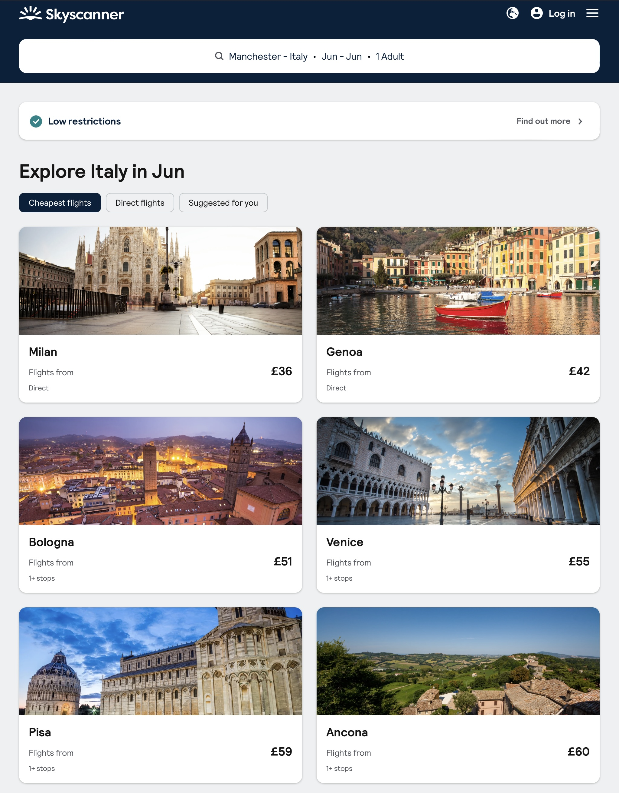
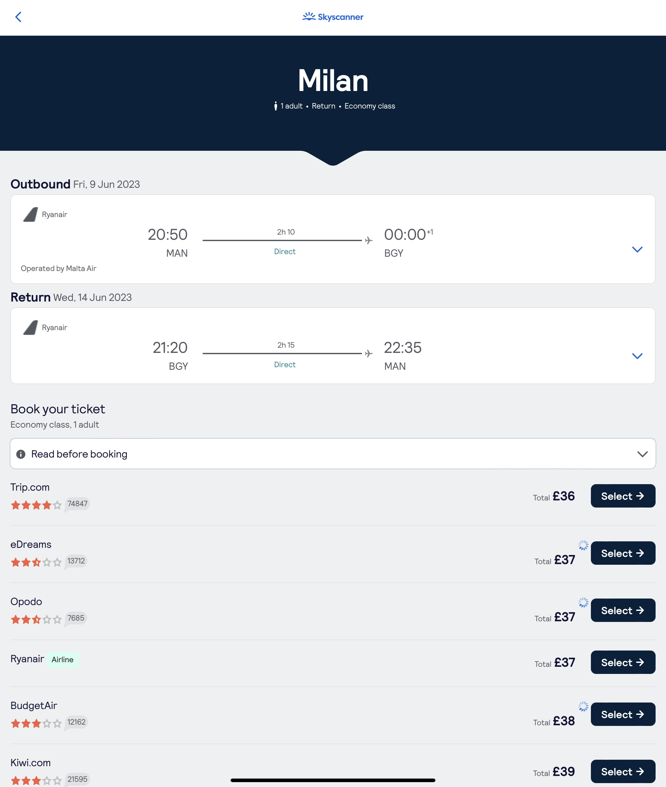

If you are on a low budget and looking for cheap flights anywhere (my favourite), I will show you the best way to do that.
First open the website www.skyscanner.net
Then pick your where would you like to fly from. I picked Manchester - the nearest airport.
If you don't have a specific destination on your mind, you can select 'Explore everywhere' as I did
Also, if you are flexible with your dates, you can pick the whole month option. I picked June. Europe in June is not too busy yet, because most of the school holidays haven't started yet but the weather is great and prices of accommodation are still not too high. Then press select and search.
Now you get a list of destinations with the cheapest prices. Select a country...

Italy is one of my favourite countries. I go back almost every year, sometimes even more than just once a year. So I chose Italy.
We can see a list of different cities we can fly into. I will stick to my low budget and will try to go to Milan. Let's see!

After clicking on the Milan picture, we now can see a calendar with prices. They are not always accurate. But more less the similar price as it states in the price calendar. I am once again going for the cheapest option which should be on Friday 9th of June with a return flight on the Wednesday the 14th of June.
We still want the cheapest flights, that is why we need to sort the flights by 'Cheapest'
And this is nearly the end of booking my flights to Milan. I can see the time of both - outbound and return flights. I just need to choose a provider.
Most of the providers will be offering extra services like extra luggage, insurance, car hire, accommodation, etc. You can easily skip all of these options, pay for your ticket and add a seat, priority boarding or extra luggage directly from the flight operating company as they charge the lowest price for all of these above.

EASY! Isn't it?! So where are you going next?